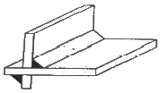
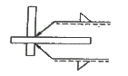
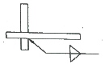
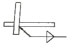
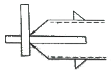
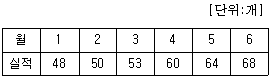

용접기능장 (2014-04-06 기출문제)
1과목: 임의구분
1. 용접 중의 피복제의 중요한 작용이 아닌 것은?
- 슬래그(slag)의 작용
- 피복통(被覆筒)의 작용
- 용접비드 형성 작용
- 아크 분위기의 생성
(정답률: 50%)

2. 가스절단 작업에서 예열불꽃이 강할 때 일어나는 현상이 아닌 것은?
- 절단면이 거칠어진다.
- 드래그가 증가한다.
- 모서리가 용융되어 둥글게 된다.
- 슬래그 중의 철 성분의 박리가 어려워 진다.
(정답률: 52%)
3. 정격전류 200A, 정격사용률 50%의 아크 용접기로 150A의 용접 전류로 용접하는 경우 허용사용률은 약 몇% 인가?
- 38
- 66
- 89
- 112
(정답률: 50%)
4. MIG 용접에서 많이 사용하는 분무형 이행(spray transfer)을 설명한 것 중 틀린 것은?
- 용융방울 입자(용적)가 느리게 모재로 이행한다.
- 고전압, 고전류에서 주로 얻어진다.
- 아르곤 가스나 헬륨가스를 사용하는 경합금 용접에서 주로 나타난다.
- 용착속도가 빠르고 능률적이다.
(정답률: 51%)
5. 용접전류 조정은 직류여자전류의 조정에 의하여 증감하며 조작이 간단하고 소음이 없으며 원격조정(remote control)이나 핫스타트가 용이한 용접기는?
- 가동철심형 교류아크 용접기
- 가포화 리액터형 교류아크 용접기
- 탭전환형 교류아크 용접기
- 가동코일형 교류아크 용접기
(정답률: 61%)
6. 연강용 피복아크 용접봉중 주성분이 산화철에 철분을 첨가하여 만든 것으로 아크는 분무상이고 스패터가 적으며 비드표면이 곱고 슬래그의 박리성이 좋아 아래보기 및 수평필릿 용접에 적합한 용접봉은?
- E4301
- E4311
- E4316
- E4327
(정답률: 52%)
7. 플라즈마 제트 절단시 알루미늄 등 경금속에 많이 사용되는 혼합가스는?
- 아르곤과 수소의 혼합가스
- 아르곤과 산소의 혼합가스
- 헬륨과 질소의 혼합가스
- 헬륨과 산소의 혼합가스
(정답률: 53%)
8. 용적이 40L인 산소 용기에 고압력계가 90kgf/cm2이 나타났다면 300L의 팁으로 몇 시간을 용접할 수 있겠는가?
- 3.5시간
- 7.5시간
- 12시간
- 20시간
(정답률: 57%)
9. 전류가 일정할 때 아크 전압이 높아지면 용접봉의 용융속도가 늦어지고, 아크 전압이 낮아지면 용융속도가 빨라지는 특성은?
- 부저항 특성
- 전압회복 특성
- 정전압 특성
- 아크길이 자기제어 특성
(정답률: 49%)
10. 피복 아크 용접봉의 종류를 나타내는 기호중 철분 저수소계를 나타내는 것은?
- E4303
- E4316
- E4324
- E4326
(정답률: 46%)
11. 다음 재료의 용접 예열온도로 가장 적합한 것은?
- 주철 : 150 - 300℃
- 주강 : 150 - 250℃
- 청동 : 60 -100℃
- 망간(Mn) - 몰리브덴강(Mo) : 20 - 100℃
(정답률: 50%)
12. 아크 에어가우징(arc air gouging)을 가스가우징과 비교했을 때 작업능률에 대한 설명으로 맞는 것은?
- 작업능률이 가스가우징과 대략 동일하다.
- 작업능률이 가스가우징보다 1.5배이다.
- 작업능률이 가스가우징보다 2 - 3배이다.
- 작업능률이 가스가우징보다 조금 낮다.
(정답률: 61%)
13. 연료가스 아세틸렌의 공기 중 대기압에서의 발화 온도는 몇 ℃인가?
- 406 - 408℃
- 515 - 543℃
- 520 - 630℃
- 650 - 750℃
(정답률: 53%)
14. 아세틸렌 도관내에 산소가 역류하는 원인에 대한 설명중 틀린 것은?
- 토치가 과열 되었을 때
- 토치가 산화물 등 부착물이 붙어서 화구 구멍이 막혔을 때
- 토치의 능력에 비해 산소의 압력이 지나치게 낮을 때
- 토치의 콕과 밸브가 마모되었을 때
(정답률: 50%)
15. 용접시 수축량에 대한 설명으로 틀린 것은?
- 선팽창계수가 클수록 수축이 증가한다.
- 입열량이 클수록 수축이 증가한다.
- 다층 용접에서 층수가 증가함에 따라 수축량의 증가 속도도 차츰 증가한다.
- 재료의 밀도가 클수록 수축량은 감소한다.
(정답률: 44%)
16. 서브머지드 아크 용접시 와이어 표면에 구리도금을 하는 목적이 아닌 것은?
- 콘택트 팁과 전기적 접촉을 원활히 해준다.
- 와이어의 녹 방지를 함으로써 기공발생을 적게 한다.
- 송급 롤러와 접촉을 원활히 해줌으로써 용접속도에 도움이 된다.
- 용착금속의 강도를 저하시키고 기계적 성질도 저하시킨다.
(정답률: 62%)
17. 가스용접 작업에 관한 안전사항중 틀린 것은?
- 가스누설 점검은 수시로 비눗물로 점검한다.
- 아세틸렌 병은 저압이므로 눕혀서 사용하여도 좋다.
- 산소병을 운반할 때는 캡(cap)을 씌워 이동한다.
- 작업종료 후에는 메인벨브 및 콕을 완전히 잠근다.
(정답률: 66%)
18. 일렉트로 슬래그 용접의 특징 중 틀린 것은?
- 입향상진 전용 용접임
- 박판 용접에 사용함
- 소모성 노즐을 사용함
- 용접능률과 용접 품질이 우수함
(정답률: 52%)
19. GTAW(Gas Tungsten Arc Welding)용접시 텅스텐의 혼입을 막기 위한 대책으로 옳은 것은?
- 사용전류를 높인다.
- 전극의 크기를 작게 한다.
- 용융지와의 거리를 가깝게 한다.
- 고주파 발생장치를 이용하여 아크를 발생시킨다.
(정답률: 54%)
20. 저항 점용접(spot welding) 중 접합면의 일부가 녹아 바둑알 보양의 단면으로 오목하게 들어간 부분을 무엇이라고 하는가?
- 너깃
- 스폿트
- 슬래그
- 플라즈마
(정답률: 58%)
2과목: 임의구분
21. 저항 점용접에서 용접을 좌우하는 중요인자가 아닌 것은?
- 용접전류
- 통전시간
- 용접전압
- 전극 가압력
(정답률: 48%)
22. 레이저 용접에 대한 설명으로 틀린 것은?
- 비접촉용접이며 어떤 분위기에서도 용접이 가능하다.
- 고에너지밀도로 모든 금속 및 이종금속의 용접도 가능하다.
- 정밀하지 않은 넓은 장소의 용접에 응용되고, 열에 민감한 부품에 근접 용접이 가능하다.
- 레이저 빔은 거울에 의해 반사될 수 있으므로 직각 및 기존의 용접 방식으로는 도달하기 어려운 영역에서도 용접 가능하다.
(정답률: 51%)
23. 탄산가스 아크 용접에서 토치의 작동 형식에 의한 분류가 아닌 것은?
- 수동식
- 용극식
- 반자동식
- 전자동식
(정답률: 54%)
24. 연납땜 시 용제를 사용하게 되는데 연납용 용제의 종류가 아닌 것은?
- 염산
- 붕산염
- 염화아연
- 염화암모늄
(정답률: 52%)
25. MIG 용접의 특징이 아닌 것은?
- 전류의 밀도가 대단히 크다.
- 아크의 자기 제어 특성이 있다.
- 용접전원은 직류의 정전압 특성과 상승 특성이다.
- 모재 표면에 대한 청정작용이 있고, 수하특성이다.
(정답률: 43%)
26. 서브머지드 아크 용접용 용제의 구비조건이 아닌 것은?
- 용접 후 슬래그의 이탈성이 좋을 것
- 적당한 입도를 가져 아크의 보호성이 좋을 것
- 아크발생을 안정시켜 안정된 용접을 할 수 있을 것
- 적당한 수분을 흡수하고 유지하여 양호한 비드를 얻을 것
(정답률: 62%)
27. 서브머지드 용접시 금속 분말(metal powder)을 용접 진행방향에 미리 추가할 때 이점으로 옳은 것은?
- 비드외관은 거칠어진다.
- 용착률을 최고 120% 증대시킬 수 있다.
- 용착 금속의 크랙 발생을 억제할 수 있다.
- 입열을 증대시켜 인성의 저하를 막을 수 있다.
(정답률: 40%)
28. 프로젝션 용접의 특징을 옳게 설명한 것은?
- 모재의 두께가 각각 다른 경우에는 용접할 수 없다.
- 서로 다른 금속을 용접할 때 열전도가 낮은 쪽에 돌기를 만든다.
- 점가 거리가 작은 점용접이 가능하고 동시에 여러 점의 용접을 할 수 있어 작업속도가 빠르다.
- 전극 면적이 넓으므로 기계적 강도나 열전도 면에서 유리하나 전극의 소모가 많다.
(정답률: 55%)
29. 전기적 에너지를 열원으로 사용하는 용접 법에 해당되지 않는 것은?
- 테르밋 용접
- 플라즈마 아크 용접
- 피복금속 아크 용접
- 일렉트로 슬래그 용접
(정답률: 55%)
30. 담금질할 때 생긴 내부응력을 제거하며 인성을 증가시키기 위한 목적으로 하는 열처리는?
- 뜨임
- 담금질
- 표면경화
- 침탄처리
(정답률: 58%)
31. 황동의 종류중 톰백(Tombac)이란 무엇을 말하는가?
- 0.3 - 0.8% Zn 황동
- 1.2 - 3.7% Zn 황동
- 5 - 20% Zn 황동
- 30 - 40% Zn 황동
(정답률: 54%)
32. 35 - 36% Ni, 0.4% Mn, 0.1 - 0.3% Co 에 나머지는 Fe 의 합금으로 열팽창계수가 상온부근에서 매우 작아 길이의 변화가 거의 없어 측정용 표준자 등에 쓰이는 불변강은?
- 인바(Invar)
- 코엘린바(Coelinver)
- 스텔라이트(stellite)
- 플레티나이트(platinite)
(정답률: 52%)
33. Fe - C 평형 상태도에서 공석반응이 일어나는 곳의 탄소함량은 얼마정도인가?
- 0.025%
- 0.33%
- 0.80%
- 2.0%
(정답률: 43%)
34. 경질 주조합금 공구 재료로써, 주조한 상태 그대로를 연삭하여 사용하는 것은?
- 스텔라이트
- 오일리스 합금
- 고속도 공구강
- 하이드로 날륨
(정답률: 43%)
35. 탄소강이 200 - 300℃에서 단면수축율, 연신율이 현저히 감소되어 충격치가 저하하는 현상을 무엇이라 하는가?
- 상온취성
- 적열취성
- 청열취성
- 저온취성
(정답률: 48%)
36. 잔류 오스테나이트를 마텐자이트화 하기 위한 처리를 무엇이라고 하는가?
- 심랭처리
- 용체화 처리
- 균질화 처리
- 불루잉 처리
(정답률: 53%)
37. 고주파 담금질의 특징을 설명한 것 중 틀린 것은?
- 직접가열에 의하므로 열효율이 높다.
- 조작이 간단하며 열처리 가공 시간이 단축될 수 있다.
- 열처리 불량은 적으나 변형 보정이 항상 필요하다.
- 가열시간이 짧아 경화면의 달단이나 산화가 극히 적다.
(정답률: 52%)
38. 두랄루민(Duralumin)의 조성으로 옳은 것은?
- Al-Cu-Mg-Mn
- Al-Cu-Ni-Si
- Al-Ni-Cu-Zn
- Al-Ni-Si-Mg
(정답률: 54%)
39. 청동에 대한 설명중 틀린 것은?
- 구리와 주석의 합금이다.
- 포금은 청동의 일종이다.
- 내식성이 나쁘다.
- 내마멸성이 좋다.
(정답률: 61%)
40. 주석계 화이트 메탈(white metal)의 주성분으로 옳은 것은?
- 주석, 알루미늄, 인
- 구리, 니켈, 주석
- 납, 알루미늄, 주석
- 구리, 안티몬, 주석
(정답률: 38%)
3과목: 임의구분
41. 금속침투법 중 철강표면에 Zn을 확산 침투시키는 방법을 무엇이라고 하는가?
- 크로마이징(chromizing)
- 칼로라이징(calorizing)
- 보로나이징(boronizing)
- 세라다이징(sheradizing)
(정답률: 44%)
42. 주철의 성질에 대한 설명으로 옳은 것은?
- 비중은 C 와 Si 등이 많을수록 높아진다.
- 용융점은 C 와 Si 등이 많을수록 높아진다.
- 흑연편이 클수록 자기감응도가 나빠진다.
- 투자율을 크게 하기 위해서는 화합탄소를 많게 하여 균일하게 분포시킨다.
(정답률: 37%)
43. 용접 전에 변형발생을 적게 하는 변형 방지 방법이 아닌 것은?
- 억제법
- 역변형법
- 압축법
- 비드순서나 용착방법을 바꾸는 법
(정답률: 48%)
44. 용접균열 시험중 열적구속도 시험이라고도 부르는 것은?
- 휘스코 균열시험(Fisco cracking test)
- CTS 균열시험(Conrtolled thermal severity cracking)
- 리하이 구속균열시험(Lehigh controlled cracking test)
- 슬릿형 균열시험(Slit type cracking test)
(정답률: 50%)
45. 용접부 육안검사의 장점이 아닌 것은?
- 육안검사는 어떤 용접부이건 제작 전, 중, 후에 할 수 있다.
- 검사원의 경험과 지식에 따라 크게 좌우되지 않는다.
- 육안검사는 용접이 끝난 즉시 보수해야할 불연속을 검출, 제거할 수 있다.
- 육안검사는 대부분 큰 불연속을 검출하나 기타 다른 방법에 의해 검출되어야 할 불연속도 예측할 수 있게 된다.
(정답률: 53%)
46. 다음 중 용접 조건의 결정시 점검사항이 아닌 것은?
- 용접전류
- 아크길이
- 용접자세
- 예열유무
(정답률: 39%)
47. 용접 잔류응력에 관한 설명 중 틀린 것은?
- 용접에 의한 영향중 역학적인 것으로 잔류응력이 가장 크다.
- 잔류응력은 일반적으로 용접선 부근에서는 인장항복 응력에 가까운 값으로 존재한다.
- 일반적으로 하중방향의 인장 잔류응력은 피로강도를 어느 정도 증가시킨다.
- 잔류응력이 존재하는 상태에서는 재료의 부식저항이 약화되어 부식이 촉진되기 쉽다.
(정답률: 36%)
48. 다음 그림과 같은 형상을 한 용접 부를 용접기호로 나타낸 것은?





(정답률: 56%)
49. 아크용접 자동회의 센서(sensor)종류에서 과전류, 전격방지 등을 위한 비접촉식 센서로 가장 많이 활용되는 것은?
- 포텐셔메타(potentio meter)식 센서
- 기계식 센서
- 전자기식 센서
- 전기접점식 센서
(정답률: 44%)
50. 주철의 보수용접 종류 중 스터드 볼트 대신 용접부 바닥면에 둥근 홈을 파고 이 부분에 걸쳐 힘을 받도록 하여 용접하는 것은?
- 스터드법
- 비녀장법
- 버터링법
- 로킹법
(정답률: 41%)
51. 용접지그 사용 시 장점이 아닌 것은?
- 구속력이 커도 잔류응력이 발생하지 않는다.
- 제품의 정밀도와 용접부 신뢰성을 높인다.
- 작업을 용이하게 하고 용접능률을 높인다.
- 동일 제품을 다량 생산할 수 있다.
(정답률: 60%)
52. 용착 금속의 균열 방지법이 아닌 것은?
- 적당한 수축에 의한 인장응력
- 적당한 예열과 서냉
- 적당한 용접조건 및 순서
- 적당한 피닝(Peening)
(정답률: 40%)
53. 맞대기 이음에서 1500kgf 의 인장력을 작동시키려고 한다. 판 두께가 6mm 일 때 필요한 용접 길이는?(단, 허용인장응력은 7 kgf/mm2 이다.)
- 25.7mm
- 35.7mm
- 38.5mm
- 47.5mm
(정답률: 40%)
54. 피복 아크 용접에서 모재 재질이 불량하고 용착금속의 냉각속도가 빠를 때 발생하는 결함은?
- 언더 컷
- 용입불량
- 기공
- 선상조직
(정답률: 46%)
55. 다음 [표]를 참조하여 5개월 단순이동평균법으로 7월의 수요를 예측하면 몇 개인가?

- 55개
- 57개
- 58개
- 59개
(정답률: 40%)
56. 도수분포표에서 도수가 최대인 계급의 대푯값을 정확히 표현한 통계량은?
- 중위수
- 시료평균
- 최빈수
- 미드-레인지(Mid-range)
(정답률: 50%)
57. 전수검사와 샘플링 검사에 관한 설명으로 가장 올바른 것은?
- 파괴검사의 경우에는 전수검사를 적용한다.
- 전수검사가 일반적으로 샘플링검사보다 품질향상에 자극을 더 준다.
- 검사항목이 많을 경우 전수검사보다 샘플링검사가 유리 하다.
- 샘플링검사는 부적합 품이 섞여 들어가서는 안 되는 경우에 적용한다.
(정답률: 54%)
58. 다음 중 반즈(Ralph M. Barnes)가 제시한 동작경제원칙에 해당되지 않는 것은?
- 표준작업의 원칙
- 신체의 사용에 관한 원칙
- 작업장의 배치에 관한 원칙
- 공구 및 설비의 디자인에 관한 원칙
(정답률: 39%)
59. 근래 인간공학이 여러 분야에서 크게 기여하고 있다. 다음 중 어느 단계에서 인간공학적 지식이 고려됨으로서 기업에 가장 큰 이익을 줄 수 있는가?
- 제품의 개발단계
- 제품의 구매단계
- 제품의 사용단계
- 작업자의 체용단계
(정답률: 54%)
60. 다음 중 두 관리도가 모두 포아송 분포를 따르는 것은?
- x 관리도, R 관리도
- c 관리도, u 관리도
- np 관리도, p 관리도
- c 관리도, p 관리도
(정답률: 37%)